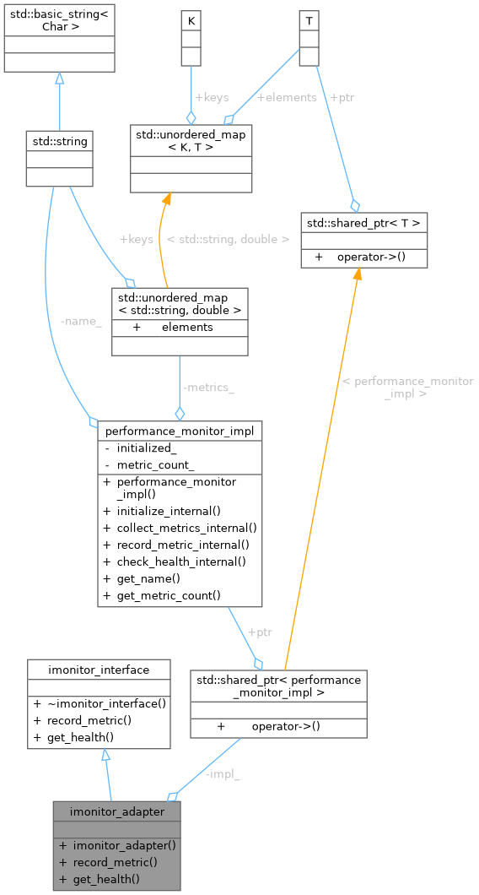

Inheritance diagram for imonitor_adapter:

Collaboration diagram for imonitor_adapter:

Public Member Functions | |
| imonitor_adapter (std::shared_ptr< performance_monitor_impl > impl) | |
| void | record_metric (const std::string &name, double value) override |
| void | get_health () override |
 Public Member Functions inherited from imonitor_interface Public Member Functions inherited from imonitor_interface | |
| virtual | ~imonitor_interface ()=default |
Private Attributes | |
| std::shared_ptr< performance_monitor_impl > | impl_ |
Detailed Description
Definition at line 172 of file facade_adapter_poc.cpp.
Constructor & Destructor Documentation
◆ imonitor_adapter()
|
inlineexplicit |
Definition at line 174 of file facade_adapter_poc.cpp.
175 : impl_(std::move(impl)) {}
std::shared_ptr< performance_monitor_impl > impl_
Definition facade_adapter_poc.cpp:188
Member Function Documentation
◆ get_health()
|
inlineoverridevirtual |
Implements imonitor_interface.
Definition at line 182 of file facade_adapter_poc.cpp.
182 {
183 std::cout << "[Adapter:IMonitor] Delegating get_health..." << std::endl;
184 impl_->check_health_internal();
185 }
◆ record_metric()
|
inlineoverridevirtual |
Implements imonitor_interface.
Definition at line 177 of file facade_adapter_poc.cpp.
177 {
178 std::cout << "[Adapter:IMonitor] Delegating record_metric..." << std::endl;
179 impl_->record_metric_internal(name, value);
180 }
Member Data Documentation
◆ impl_
|
private |
Definition at line 188 of file facade_adapter_poc.cpp.
The documentation for this class was generated from the following file:
- examples/facade_adapter_poc.cpp